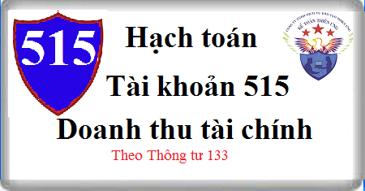

Hướng dẫn cách hạch toán Tài khoản 515 theo thông tư 133, Cách hạch toán doanh thu tài chính như: Lãi cho vay, lãi tiền gửi, lãi trả trậm, trả góp, chênh lệch tỷ giá, kết chuyển doanh thu tài chính cuối kỳ…
1. Nguyên tắc kế toán Tài khoản 515 - Doanh thu hoạt động tài chính
a) Tài khoản này dùng để phản ánh doanh thu tiền lãi, tiền bản quyền, cổ tức, lợi nhuận được chia và doanh thu hoạt động tài chính khác của doanh nghiệp, gồm:
- Tiền lãi: Lãi cho vay, lãi tiền gửi Ngân hàng, lãi bán hàng trả chậm, trả góp, lãi đầu tư trái phiếu, tín phiếu, chiết khấu thanh toán được hưởng do mua hàng hóa, dịch vụ;...
- Cổ tức, lợi nhuận được chia cho giai đoạn sau ngày đầu tư;
- Thu nhập về hoạt động đầu tư mua, bán chứng khoán ngắn hạn, dài hạn; Lãi chuyển nhượng vốn khi thanh lý các khoản đầu tư góp vốn vào đơn vị khác;
- Thu nhập về các hoạt động đầu tư khác;
- Lãi tỷ giá hối đoái phát sinh trong kỳ và đánh giá lại khoản mục tiền tệ có gốc ngoại tệ cuối kỳ; lãi do bán ngoại tệ;
- Các khoản doanh thu hoạt động tài chính khác.
b) Đối với hoạt động mua, bán chứng khoán kinh doanh, doanh thu được ghi nhận là số chênh lệch giữa giá bán lớn hơn giá vốn, trong đó giá vốn là giá trị ghi sổ được xác định theo phương pháp bình quân gia quyền hoặc nhập trước xuất trước, giá bán được tính theo giá trị hợp lý của khoản nhận được. Trường hợp mua, bán chứng khoán dưới hình thức hoán đổi cổ phiếu (nhà đầu tư hoán đổi cổ phiếu A để lấy cổ phiếu B), kế toán xác định giá trị cổ phiếu nhận về theo giá trị hợp lý tại ngày trao đổi như sau:
- Đối với cổ phiếu nhận về là cổ phiếu niêm yết, giá trị hợp lý của cổ phiếu là giá đóng cửa niêm yết trên thị trường chứng khoán tại ngày trao đổi. Trường hợp tại ngày trao đổi thị trường chứng khoán không giao dịch thì giá trị hợp lý của cổ phiếu là giá đóng cửa phiên giao dịch trước liền kề với ngày trao đổi.
- Đối với cổ phiếu nhận về là cổ phiếu chưa niêm yết được giao dịch trên sàn UPCOM, giá trị hợp lý của cổ phiếu là giá đóng cửa công bố trên sàn UPCOM tại ngày trao đổi. Trường hợp ngày trao đổi sàn UPCOM không giao dịch thì giá trị hợp lý của cổ phiếu là giá đóng cửa phiên giao dịch trước liền kề với ngày trao đổi.
- Đối với cổ phiếu nhận về là cổ phiếu chưa niêm yết khác, giá trị hợp lý của cổ phiếu là giá thỏa thuận giữa các bên hoặc giá trị sổ sách tại thời điểm trao đổi hoặc giá trị sổ sách tại thời điểm cuối quý trước liền kề với ngày trao đổi. Việc xác định giá trị sổ sách của cổ phiếu được thực hiện theo công thức:
| Giá trị sổ sách của cổ phiếu | = | Tổng vốn chủ sở hữu |
| Số lượng cổ phiếu hiện có tại thời điểm trao đổi |
c) Đối với khoản doanh thu từ hoạt động mua, bán ngoại tệ, doanh thu được ghi nhận là số chênh lệch lãi giữa giá ngoại tệ bán ra và giá ngoại tệ mua vào.
d) Đối với lãi tiền gửi: Doanh thu không bao gồm khoản lãi tiền gửi phát sinh do hoạt động đầu tư tạm thời của khoản vay sử dụng cho mục đích xây dựng tài sản dở dang.
đ) Đối với tiền lãi phải thu từ các khoản cho vay, bán hàng trả chậm, trả góp: Doanh thu chỉ được ghi nhận khi chắc chắn thu được và khoản gốc cho vay, nợ gốc phải thu không bị phân loại là quá hạn cần phải lập dự phòng.
e) Đối với khoản tiền lãi đầu tư nhận được từ khoản đầu tư cổ phiếu, trái phiếu thì chỉ có phần tiền lãi của các kỳ sau khi doanh nghiệp mua lại khoản đầu tư này mới được ghi nhận là doanh thu phát sinh trong kỳ, còn khoản lãi đầu tư nhận được từ các khoản lãi đầu tư dồn tích trước khi doanh nghiệp mua lại khoản đầu tư đó thì ghi giảm giá gốc khoản đầu tư trái phiếu, cổ phiếu đó.
g) Khi nhà đầu tư nhận cổ tức bằng cổ phiếu, nhà đầu tư chỉ theo dõi số lượng cổ phiếu tăng thêm trên thuyết minh BCTC, không ghi nhận giá trị cổ phiếu được nhận, không ghi nhận doanh thu hoạt động tài chính, không ghi nhận tăng giá trị khoản đầu tư vào công ty.
h) Việc hạch toán khoản doanh thu hoạt động tài chính phát sinh liên quan đến ngoại tệ được thực hiện theo quy định tại Điều 52 Thông tư này. Chi tiết xem tại đây: Cách hạch toán chênh lệch tỷ giá
2. Kết cấu và nội dung Tài khoản 515 - Doanh thu hoạt động tài chính
Bên Nợ:
- Số thuế GTGT phải nộp tính theo phương pháp trực tiếp (nếu có);
- Kết chuyển doanh thu hoạt động tài chính thuần sang tài khoản 911 - “Xác định kết quả kinh doanh”.
Bên Có: Các khoản doanh thu hoạt động tài chính phát sinh trong kỳ.
Tài khoản 515 không có số dư cuối kỳ.
3. Cách hạch toán doanh thu tài chính Tài khoản 515 theo thông tư 133:
a) Phản ánh doanh thu cổ tức, lợi nhuận được chia bằng tiền phát sinh trong kỳ từ hoạt động góp vốn đầu tư:
- Khi nhận được thông báo về quyền nhận cổ tức, lợi nhuận từ hoạt động đầu tư, ghi:
Nợ TK 138 Phải thu khác
Có TK 515 - Doanh thu hoạt động tài chính.
- Trường hợp nếu cổ tức, lợi nhuận được chia bao gồm cả khoản lãi đầu tư dồn tích trước khi doanh nghiệp mua lại khoản đầu tư đó thì doanh nghiệp phải phân bổ số tiền lãi này, chỉ có phần tiền lãi của các kỳ mà doanh nghiệp mua khoản đầu tư này mới được ghi nhận là doanh thu hoạt động tài chính, còn khoản tiền lãi dồn tích trước khi doanh nghiệp mua lại khoản đầu tư đó thì ghi giảm giá trị của chính khoản đầu tư trái phiếu, cổ phiếu đó, ghi:
Nợ TK 138 - Phải thu khác (tổng số cổ tức, lợi nhuận thu được)
Có các Tài khoản 121, 228 (phần cổ tức, lợi nhuận dồn tích trước khi doanh nghiệp mua lại khoản đầu tư)
Có TK 515 - Doanh thu hoạt động tài chính (phần cổ tức, lợi nhuận của các kỳ sau khi doanh nghiệp mua khoản đầu tư này).
b) Định kỳ, khi có bằng chứng chắc chắn thu được khoản lãi cho vay (bao gồm cả lãi trái phiếu), lãi tiền gửi, lãi trả chậm, trả góp, ghi:
Nợ TK 138 - Phải thu khác
Nợ các TK 121, 128 (nếu lãi cho vay định kỳ được nhập gốc)
Có TK 515 - Doanh thu hoạt động tài chính.
Bằng chứng chắc chắn thu được các khoản phải thu này bao gồm:
- Khoản phải thu gốc không bị coi là nợ khó đòi thuộc đối tượng phải trích lập dự phòng hoặc nợ không có khả năng thu hồi, không thuộc diện bị khoanh nợ, giãn nợ;
- Có xác nhận nợ và cam kết trả nợ của bên nhận nợ;
- Các bằng chứng khác (nếu có).
c) Khi nhượng bán hoặc thu hồi các khoản đầu tư tài chính, ghi:
Nợ các Tài khoản 111, 112, 131…
Nợ TK 635 - Chi phí tài chính (nếu bán bị lỗ)
Có các TK 121, 228
Có TK 515 - Doanh thu hoạt động tài chính (nếu bán có lãi).
d) Trường hợp hoán đổi cổ phiếu, kế toán căn cứ giá trị hợp lý của cổ phiếu nhận về và giá trị ghi sổ của cổ phiếu mang đi trao đổi, ghi
Nợ các TK 121, 228 (chi tiết cổ phiếu nhận về theo giá trị hợp lý)
Nợ TK 635 - Chi phí tài chính (chênh lệch giữa giá trị hợp lý của cổ phiếu nhận về nhỏ hơn giá trị ghi sổ của cổ phiếu mang đi trao đổi)
Có các TK 121, 228 (cổ phiếu mang đi trao đổi theo giá trị ghi sổ)
Có TK 515 - Doanh thu hoạt động tài chính (chênh lệch giữa giá trị hợp lý của cổ phiếu nhận về lớn hơn giá trị ghi sổ của cổ phiếu mang đi trao đổi).
đ) Kế toán bán ngoại tệ, ghi:
- Trường hợp bên Có TK tiền áp dụng tỷ giá ghỉ sổ và tỷ giá giao dịch thực tế lớn hơn tỷ giá ghi sổ các TK tiền, ghi:
Nợ các TK 111 (1111), 112 (1121) (tỷ giá gia dịch thực tế bán)
Có các TK 111 (1112), 112 (1122) (theo tỷ giá ghi sổ kế toán)
Có TK 515 - Doanh thu hoạt động tài chính (số chênh lệch tỷ giá giao dịch thực tế bán lớn hơn tỷ giá ghi sổ kế toán).
- Trường hợp bên Có TK tiền áp dụng tỷ giá giao dịch thực tế, ghi:
Nợ các TK 111 (1111), 112 (1121)
Có các TK 111 (1112), 112 (1122)
Khoản lãi chênh lệch tỷ giá phát sinh trong kỳ do tỷ giá giao dịch thực tế lớn hơn tỷ giá ghi sổ các TK tiền được ghi nhận đồng thời tại thời điểm bán ngoại tệ hoặc định kỳ tùy theo đặc điểm hoạt động kinh doanh và yêu cầu quản lý của doanh ghiệp:
Nợ các TK 111 (1112), 112 (1122)
Có TK 515 - Doanh thu hoạt động tài chính
e) Khi mua vật tư, hàng hoá, TSCĐ, dịch vụ thanh toán bằng ngoại tệ mà tỷ giá giao dịch thực tế tại thời điểm phát sinh lớn hơn tỷ giá ghi sổ kế toán các TK 111, 112, ghi:
- Trường hợp bên Có TK tiền áp dụng tỷ giá ghỉ sổ để quy đổi ra đơn vị tiền tệ kế toán, ghi:
Nợ các Tài khoản 151, 152, 153, 156, 157, 211, 217, 241, 642 (tỷ giá gia dịch thực tế tại ngày giao dịch)
Có các TK 111 (1112), 112 (1122) (theo tỷ giá ghi sổ kế toán)
Có TK 515 - Doanh thu hoạt động tài chính (lãi tỷ giá hối đoái)
- Trường hợp bên Có TK tiền áp dụng tỷ giá giao dịch thực tế để quy đổi ra đồng tiền ghi sổ kế toán, ghi:
+ Khi chi tiền mua vật tư, hàng hóa, TSCĐ, dịch vụ:
Nợ các TK 151, 152, 153, 156, 157, 211, 217, 241, 642 , 133 ..(tỷ giá giao dịch thực tế tại thời điểm giao dịch và thanh toán)
Có các TK 111 (1112), 112 (1122) ..(tỷ giá giao dịch thực tế tại thời điểm giao dịch và thanh toán)
+ Khoản lãi chênh lệch tỷ giá phát sinh trong kỳ được ghi nhận đồng thời khi chi tiền mua vật tư, hàng hóa, TSCĐ, dịch vụ hoặc định kỳ tùy theo đặc điểm hoạt động kinh doanh và yêu cầu quản lý của DN, ghi:
Nợ các TK 111 (1112), 112 (1122)
Có TK 515 - Doanh thu hoạt động tài chính
g) Khi thanh toán nợ phải trả bằng ngoại tệ (nợ phải trả người bán, nợ vay, nợ thuê tài chính, nợ nội bộ…):
- Trường hợp bên Nợ các tài khoản phải trả và bên Có các tài khoản tiền áp dụng tỷ giá ghi sổ để quy đổi ra đơn vị tiền tệ kế toán và tỷ giá ghi sổ kế toán của các TK phải trả lớn hơn tỷ giá ghi sổ kế toán của các TK tiền, ghi:
Nợ các Tài khoản 331, 336, 341... (tỷ giá ghi sổ kế toán)
Có các TK 111 (1112), 112 (1122) (tỷ giá ghi sổ kế toán)
Có TK 515 - Doanh thu hoạt động tài chính (lãi tỷ giá hối đoái)
- Trường hợp bên Nợ các tài khoản phải trả và bên Có các tài khoản tiền áp dụng tỷ giá giao dịch thực tế để quy đổi ra đơn vị tiền tệ kế toán và tỷ giá ghi sổ của các TK phải trả lớn hơn tỷ giá giao dịch thực tế hoặc tỷ giá ghi sổ của các TK tiền nhỏ hơn tỷ giá giao dịch thực tế, ghi:
+Khi thanh toán nợ phải trả:
Nợ các TK 331, 338, 341... (tỷ giá giao dịch thực tế)
Có các TK 111 (1112), 112 (1122) (tỷ giá giao dịch thực tế)
+ Khoản lãi chênh lệch tỷ giá phát sinh trong kỳ được ghi nhận đồng thời khi thanh toán nợ phải trả hoặc định kỳ tùy theo đặc điểm hoạt động kinh doanh và yêu cầu quản lý của DN, ghi:
Nợ các TK 331, 338, 341, 111 (1112), 112 (1122) (chênh lệch giữa tỷ giá ghi sổ của tài khoản nợ phải trả hoặc tài khoản tiền và tỷ giá giao dịch thực tế tại thời điểm trả nợ)
Có TK 515 - Doanh thu hoạt động tài chính
h) Khi thu được tiền nợ phải thu (nợ phải thu của khách hàng, phải thu nội bộ, phải thu khác …) bằng ngoại tệ mà tỷ giá giao dịch thực tế lớn hơn tỷ giá ghi sổ kế toán của các TK phải thu, ghi:
- Trường hợp bên Có các tài khoản phải thu áp dụng tỷ giá ghi sổ để quy đổi ra đồng tiền ghi sổ kế toán, ghi:
Nợ các TK 111 (1112), 112 (1122) ... (tỷ giá giao dịch thực tế tại thời điểm giao dịch)
Có các Tài khoản 131, 136, 138 … (tỷ giá ghi sổ kế toán)
Có TK 515 - Doanh thu hoạt động tài chính (lãi tỷ giá hối đoái)
- Trường hợp bên Có các tài khoản phải thu áp dụng tỷ giá giao dịch thực tế để quy đổi ra đồng tiền ghi sổ kế toán, ghi:
+ Khi thu các khoản nợ phải thu:
Nợ các TK 111 (1112), 112 (1122) (tỷ giá giao dịch thực tế tại thời điểm thu nợ)
Có các TK 131, 136, 138... (tỷ giá giao dịch thực tế tại thời điểm thu nợ)
+ Khoản lãi chênh lệch tỷ giá phát sinh trong kỳ được ghi nhận đồng thời khi thu được nợ phải thu hoặc định kỳ tùy theo đặc điểm hoạt động kinh doanh và yêu cầu quản lý của DN, ghi:
Nợ các TK 131, 136, 138…. ) (chênh lệch giữa tỷ giá ghi sổ của tài khoản nợ phải thu và tỷ giá giao dịch thực tế tại thời điểm thu nợ)
Có TK 515 - Doanh thu hoạt động tài chính
i) Khi bán sản phẩm, hàng hoá theo phương thức trả chậm, trả góp thì ghi nhận doanh thu bán hàng và cung cấp dịch vụ của kỳ kế toán theo giá bán trả tiền ngay, phần chênh lệch giữa giá bán trả chậm, trả góp với giá bán trả tiền ngay ghi vào tài khoản 3387 "Doanh thu chưa thực hiện", ghi:
Nợ các TK 111, 112, 131,...
Có TK 511- Doanh thu bán hàng và cung cấp dịch vụ (theo giá bán trả tiền ngay chưa có thuế GTGT)
Có TK 3387 Doanh thu chưa thực hiện (phần chênh lệch giữa giá bán trả chậm, trả góp và giá bán trả tiền ngay chưa có thuế GTGT)
Có TK 3331 Thuế GTGT phải nộp.
- Định kỳ, xác định và kết chuyển doanh thu tiền lãi bán hàng trả chậm, trả góp trong kỳ, ghi:
Nợ TK 3387 - Doanh thu chưa thực hiện
Có TK 515 - Doanh thu hoạt động tài chính.
k) Hàng kỳ, xác định và kết chuyển doanh thu tiền lãi đối với các khoản cho vay hoặc mua trái phiếu nhận lãi trước, ghi:
Nợ TK 3387 - Doanh thu chưa thực hiện
Có TK 515 - Doanh thu hoạt động tài chính.
l) Số tiền chiết khấu thanh toán được hưởng do thanh toán tiền mua hàng trước thời hạn được người bán chấp thuận, ghi:
Nợ TK 331 - Phải trả cho người bán
Có TK 515 - Doanh thu hoạt động tài chính.
m) Cuối kỳ, kế toán kết chuyển toàn bộ khoản lãi chênh lệch tỷ giá hối đoái đánh giá lại các khoản mục tiền tệ có gốc ngoại tệ vào doanh thu hoạt động tài chính, ghi:
Nợ TK 413 - Chênh lệch tỷ giá hối đoái
Có TK 515 - Doanh thu hoạt động tài chính.
p) Cuối kỳ kế toán, kết chuyển doanh thu hoạt động tài chính để xác định kết quả kinh doanh, ghi:
Nợ TK 515 - Doanh thu hoạt động tài chính
Có TK 911 - Xác định kết quả kinh doanh
---------------------------------------
Chúc bạn thành công! Bạn muốn học hoàn thiện sổ sách, lập Báo cáo tài chính, Quyết toán thuế thực tế, chuyên sâu có thể tham gia: Lớp học kế toán thực hành tại Kế toán Diệu Tâm.
Chúc bạn thành công! Bạn muốn học hoàn thiện sổ sách, lập Báo cáo tài chính, Quyết toán thuế thực tế, chuyên sâu có thể tham gia: Lớp học kế toán thực hành tại Kế toán Diệu Tâm.
